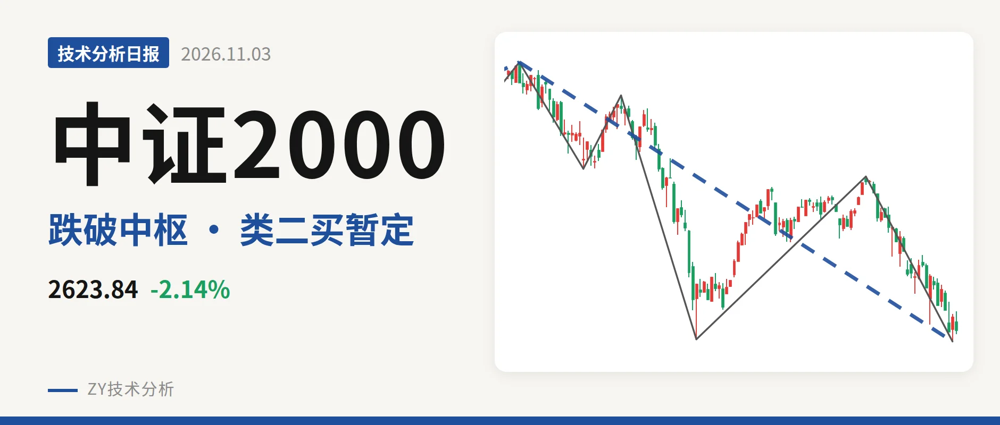

技术分析日报 · 2026-11-04

上证指数 3686.17 +2.16%
反弹不回3928点，三卖格局待化解

沪深300 4008.87 -0.20%
失守4478中枢下沿，3958一买未坏

中证500 6327.05 -1.45%
跌破7451中枢，暂定一买待验证

中证2000 2623.84 -2.14%
跌破3381点中枢下沿

中证红利 5594.87 +0.13%
反弹未过5701点，中枢内震荡

创业板指 2391.65 -2.73%
跌至2376点，一买暂定
⚠️ 本文为基于公开行情数据的缠论技术结构记录，由程序自动计算并生成，仅供学习交流，不构成任何投资建议。市场有风险，投资需谨慎。